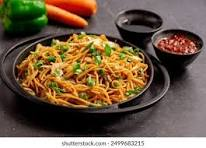

Vegetable Hakka Noodles

Indo-Chinese favorite made with stir-fried noodles and vegetables tossed
in soy sauce and spices.
Ingredients:
- Boiled Hakka noodles
- Julienned vegetables (carrot, cabbage, bell peppers)
- Soy sauce
- Green chilies
- Ginger garlic paste
- Spring onions
- Oil
Instructions:
- Heat oil in a wok and add garlic-ginger paste, sauté briefly.
- Add chopped vegetables and stir-fry on high heat.
- Add noodles and soy sauce, toss everything well.
- Garnish with spring onions and serve hot.